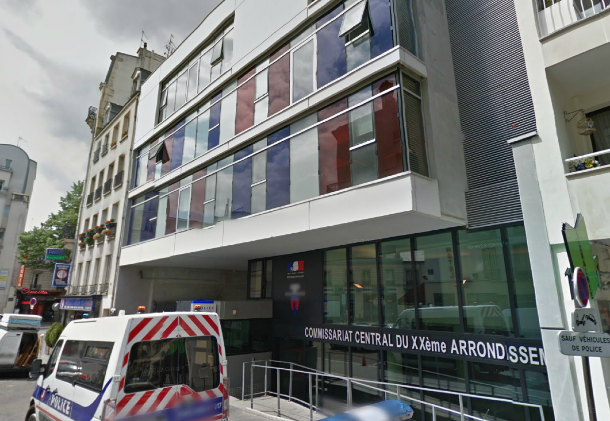

L'Authentique - Le journal des vérités vérifiées
Un policier du XXème arrondissement finit toutes ses journées de travail à 20H!
Paris, XXème arrondissement - Alors que tous les policiers mettent un point d'honneur à finir à 18H, une jeune recrue de la police finit ses journées de travail à 20H!

Dans la capitale, les policiers s'affairent et se dépèchent. Leur 4ème week-end doit être préparé et chaque chose doit être là pour que ces petites vancances commencent.
Mais il y a trois jours, ils ont du assister à une scène traumatissante. Dans la nuit du 12 janvier, Kévin Babtou, jeune policier fraîchement admis dans la police, s'est fait arrêté par la gendarmerie.
Le supérieur de l'officier Babtou, le commissaire Jacques Use, n'a souhaité faire aucun commentaire sur l'affaire en cours.
"Il est hors de question de je dise quoi que ce soit sur l'affaire menée par mes collègues" affirme-t'il. "Ils feront tout pour le faire avouer. J'en suis sûr."
Du côté de la brigade, c'est le choc. Beaucoup d'entres eux ne voyaient pas le jeune homme sous cet angle.
"J'étais sûr qu'il était comme nous. Je l'aimais bien ce brave petit." avoue un de ses collègues. "J'allais lui proposer de venir boire un verre. Je pensais qu'on pourrait devenir amis lui et moi."
"Je n'y crois pas!" s'offusque le colonel Moutarde. "Il a osé travailler! Lorsque nous sommes rentrés dans la police, nous avons fait le serment de ne jamais protéger les Français! C'est une honte!"
Si la plupart de ses collègues et amis n'ont pas voulu de faire de commentaires, les forces de l'Ordre (à savoir l'Armée et la Gendarmerie) condamnent ce genre d'actes "d'une violence sans précédant".
"Je suis catégorique lorsque je dis que cet homme sera ammené devant la justice. Nous ne pouvons pas laisser opérer un terroriste du travail. Il ne nous volera pas notre travail. C'est une promesse." rassure le chef des Armées.
Rédaction de Line Evitable et Marie Vière.